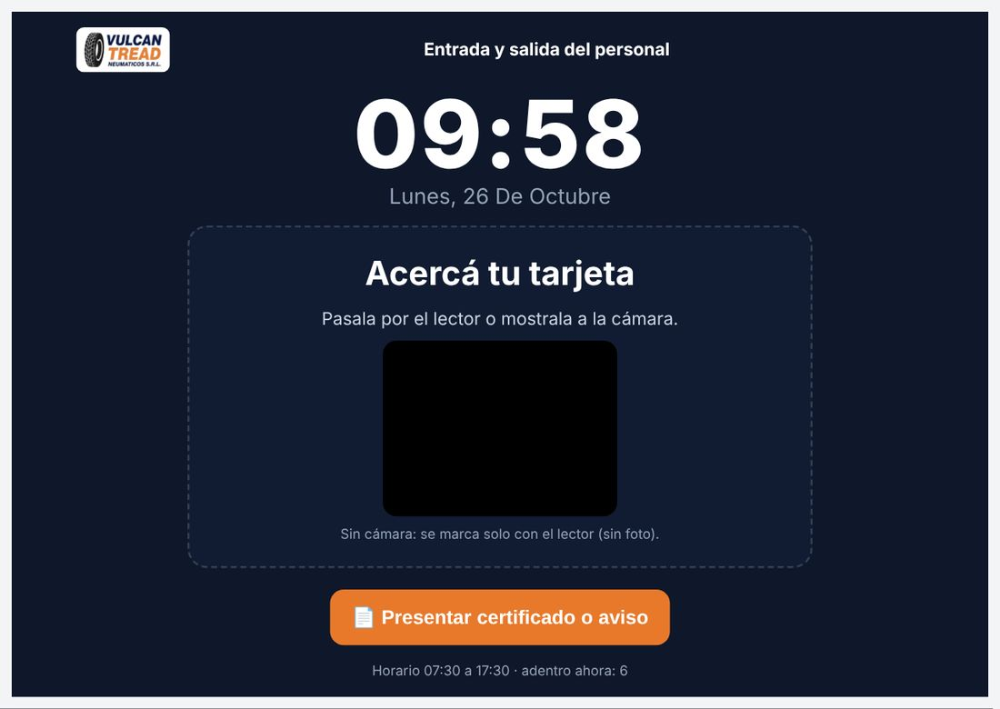
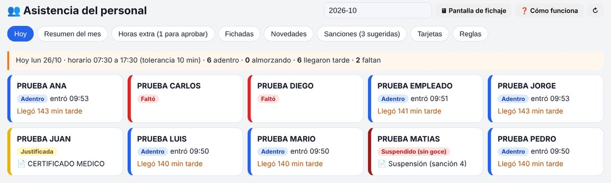
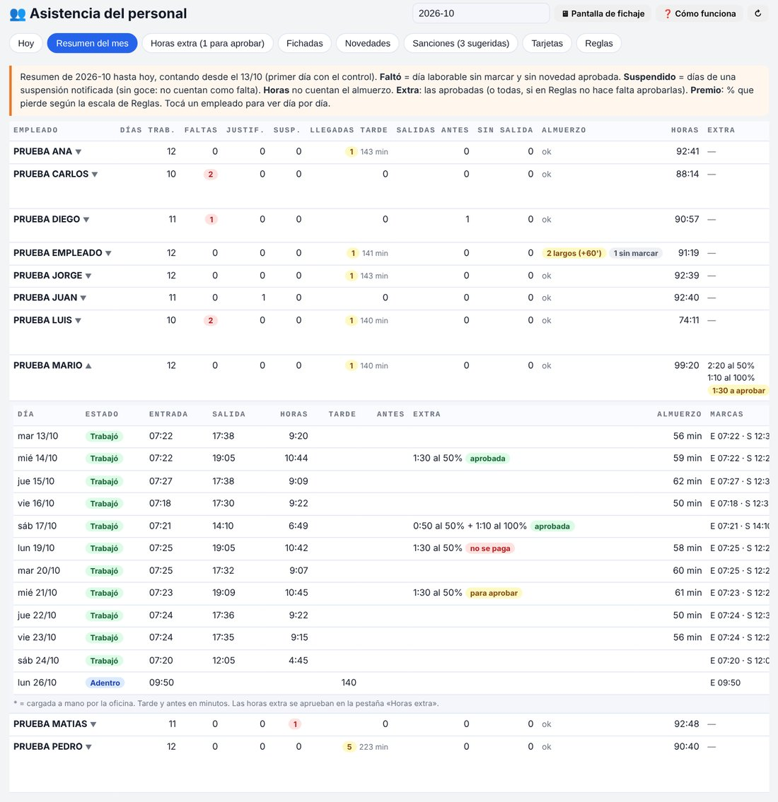
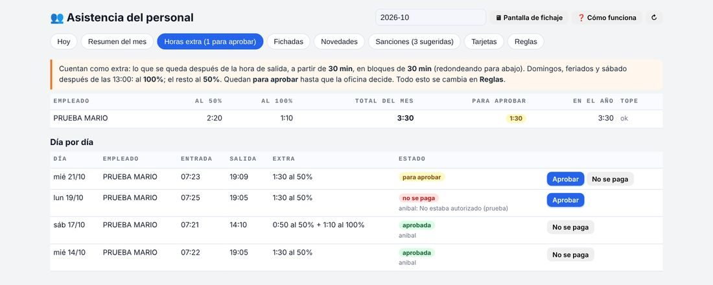
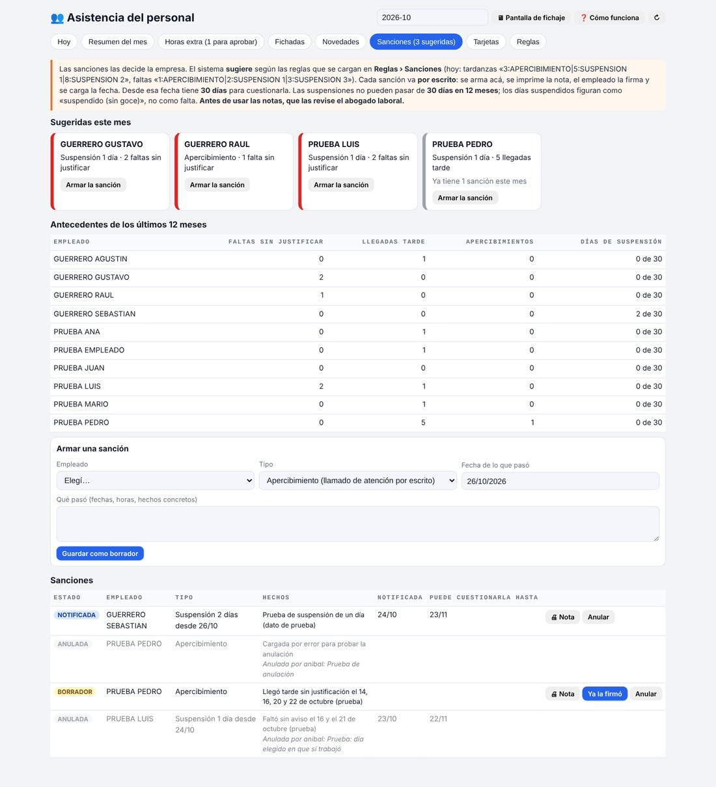
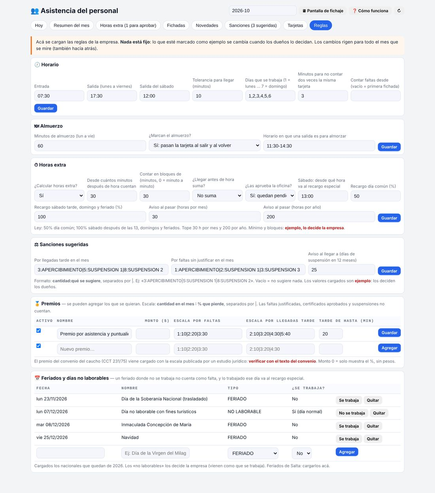
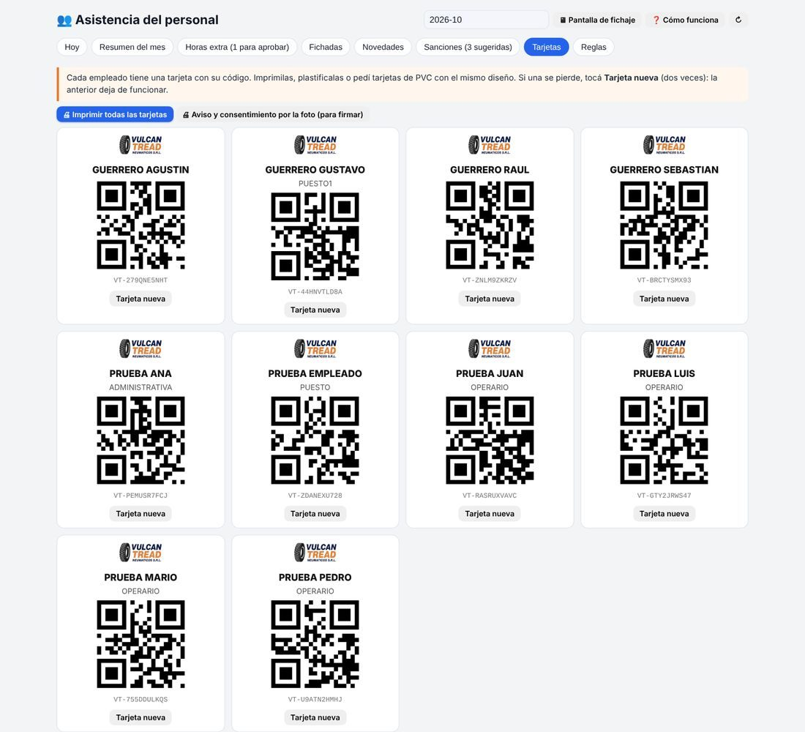

En una línea: una tablet en la entrada y una tarjeta por empleado. Cada uno pasa su tarjeta al entrar, al salir a comer, al volver y al irse. El sistema registra la hora del servidor (no se puede adelantar ni atrasar), saca una foto en ese momento y arma solo el resumen del mes: faltas, llegadas tarde, horas, horas extra y certificados. El sistema ya está hecho y probado en el sistema de pruebas (el detalle de qué se probó y qué no está en el punto 3); lo que falta es comprar el equipo y que los dueños definan sus reglas. Lo que figura en rojo es estimado o ejemplo.
1. Qué problema resuelve
Hoy, sin control
- No hay registro firme de a qué hora entra y sale cada uno.
- Las llegadas tarde y las faltas se recuerdan «de memoria».
- Las horas extra se pagan por lo que se dice, no por lo que se registra.
- Los certificados llegan por WhatsApp y se pierden.
- Si hay un reclamo o un juicio por horas extra, la empresa no tiene planillas para mostrar.
Con el sistema
- Cada marca con hora del servidor y foto: nadie marca por otro.
- Al abrir el sistema aparece quién falta y quién llegó tarde.
- Resumen del mes automático por empleado, en pantalla (todavía no se imprime ni pasa solo a sueldos).
- Horas extra calculadas con las reglas de la empresa y aprobadas por la oficina.
- Certificados con foto, aprobados o rechazados, con historial.
- Registro guardado y ordenado, que sirve como respaldo ante un reclamo.
Por qué conviene tenerlo (no solo para controlar): en un juicio por horas extra, si el empleador no muestra los registros de horario, la justicia suele darle la razón al trabajador. La reforma laboral de 2026 creó el banco de horas, que exige un registro confiable de lo trabajado. Y el premio por asistencia del convenio del caucho se calcula por faltas y llegadas tarde: sin registro, no hay forma justa de liquidarlo.
2. Cómo funciona, paso a paso
1
Tarjeta personal. Cada empleado recibe una tarjeta con su nombre y un código QR (se imprime desde el sistema). Si la pierde, la oficina hace una nueva y la vieja deja de andar.
2
Marca en la entrada. Pasa la tarjeta por la tablet. El sistema decide solo si es entrada o salida, le muestra un cartel grande («Buen día, Pedro · ENTRADA 07:28») y saca una foto. Si la pasa dos veces seguidas, no la cuenta de nuevo.
3
Almuerzo. La pasa al salir a comer («volvé a las 13:30») y al volver («almuerzo de 58 min»). Si se pasa del tiempo, queda anotado.
4
Certificado o aviso. En la misma tablet toca «Presentar certificado», pasa su tarjeta y saca una foto del papel. Llega a la oficina como pendiente. También se puede cargar desde la oficina si llegó por WhatsApp.
5
Oficina. Ve quién falta hoy, aprueba certificados y horas extra, corrige con motivo si alguien no pudo marcar (queda quién lo hizo) y ve el resumen del mes por empleado.
6
Reglas de la empresa. Horario, tolerancia, sábado, almuerzo, cómo se cuentan las horas extra, premios y sanciones sugeridas: todo se cambia en pantalla, sin tocar el sistema.
Así se ve (capturas del sistema funcionando, con empleados de prueba)








3. Circuito completo y qué está probado
Todo se probó el 26/10/2026 en el sistema de pruebas, con 10 empleados de prueba y marcas simuladas del 13 al 24 de octubre, desde la computadora. No se probó todavía en una tablet real: la tablet no está comprada.
| # | Quién | Qué pasa | Estado | Cómo se probó |
|---|---|---|---|---|
| 1 | Oficina | Se carga el empleado en Maestros → Empleados y en Asistencia → Tarjetas se genera su tarjeta con un código único (VT-…). | Probado | Tarjetas generadas para los 10 empleados de prueba. |
| 2 | Oficina | Si una tarjeta se pierde: «Tarjeta nueva». La vieja deja de andar. | Probado | Se pasó la tarjeta vieja en la tablet: respondió «Esa tarjeta está anulada. Pedí una nueva en la oficina.». Un código inventado: «tarjeta desconocida». |
| 3 | Oficina | Imprimir las tarjetas y la hoja de consentimiento de la foto. | Armado, no impreso | Las hojas se arman en pantalla; no se imprimieron en papel. |
| 4 | Oficina | Dejar la tablet abierta en la pantalla de fichaje (link con ?fichaje) con un usuario que solo use esa pantalla. La sesión se renueva sola cada 20 minutos. | No probado | Se probó la pantalla con el usuario administrador. Falta crear el usuario de la tablet y probarla abierta un día y una noche enteros. |
| 5 | Empleado | Pasa la tarjeta: por el lector USB (escribe el código y Enter) o mostrándola a la cámara. | Probado con lector simulado No probado con cámara | El lector se simuló escribiendo el código y Enter, que es exactamente lo que hace un lector USB. La lectura del QR con la cámara no se probó: hace falta la tablet. |
| 6 | Sistema | Decide solo si es entrada o salida, con la hora del servidor, y muestra el cartel grande («ENTRADA 07:28»). | Probado | Entrada, salida, vuelta: alternó bien. La hora es la del servidor, no la de la tablet. |
| 7 | Sistema | Si pasa la tarjeta dos veces seguidas, no la cuenta de nuevo. | Probado | Se pasó la misma tarjeta dos veces seguidas: mostró la marca anterior y no guardó otra. |
| 8 | Sistema | Saca una foto en cada marca y la guarda; la foto solo la ve un usuario con sesión. | Probado el guardado No probado con cámara real | Se guardó y se leyó una foto de prueba; sin sesión el sistema no la entrega. Falta con la cámara de la tablet. |
| 9 | Empleado | Almuerzo: marca al salir y al volver; si se pasa de los 60 min queda anotado. | Probado | Con las marcas simuladas del 13 al 24/10: almuerzos largos y sin marcar aparecen en el resumen. |
| 10 | Empleado | Certificado: en la tablet toca «Presentar certificado», pasa la tarjeta y saca foto del papel. | Probado (foto de prueba) | Llegó a la oficina como pendiente. |
| 11 | Oficina | Pestaña Hoy y aviso al entrar al sistema: quién está, quién llegó tarde, quién falta, quién está con certificado o suspendido. | Probado | Revisado con los datos de prueba del 26/10. |
| 12 | Oficina | Aprobar o rechazar certificados; cargar una novedad que llegó por WhatsApp. | Probado | Un certificado aprobado (cuenta como justificada) y otro rechazado (vuelve a contar como falta). |
| 13 | Oficina | Cargar a mano una marca que faltó (con motivo) o anular una mal hecha. Queda quién lo hizo. | Probado | Marca manual con asterisco en el resumen y anulación con motivo. |
| 14 | Oficina | Feriados: el día no cuenta como falta. | Probado | Feriado cargado: ese día no figuró como falta. |
| 15 | Oficina | Horas extra: se calculan solas (desde 30 min, en bloques de 30; 50% y 100% según el día y la hora) y la oficina las aprueba o no. | Probado | Días con extra al 50%, sábado partido 50%/100%, aprobada, rechazada y pendiente. |
| 16 | Oficina | Sanciones: el sistema sugiere según las reglas; la oficina arma la nota, la imprime, la hace firmar y carga la fecha. | Probado (sin imprimir) | Suspensión notificada: esos días figuran «suspendido», no como falta, y no le quita el premio; el tope de 30 días en 12 meses frena una suspensión que lo pasa. La nota no se imprimió en papel. |
| 17 | Oficina | Premio por asistencia: se pierde un % según faltas y llegadas tarde. | Probado | Premio de prueba cargado y apagado. |
| 18 | Oficina | Resumen del mes por empleado y día por día. | Probado en pantalla | Con 387 marcas simuladas del 13 al 24/10. No se imprime ni pasa solo a sueldos: hoy hay que copiarlo. |
| 19 | Oficina | Reglas: horario, tolerancia, sábado, almuerzo, extras, premios y sanciones se cambian en pantalla. | Probado | Se cambiaron y se probaron valores mal escritos: los rechaza sin tocar el resto. |
Lo que falta probar, en este orden
- Con la tablet comprada: lectura del QR con la cámara, la foto real y el cartel, a la luz de la entrada.
- Crear el usuario de la tablet y dejarla abierta un día y una noche: que a la mañana siga funcionando sin volver a entrar.
- WiFi de la entrada: que la marca llegue al sistema sin demoras.
- Imprimir en papel las tarjetas, el consentimiento y una nota de sanción.
- Si se compra el lector (opción B): que la tablet lo reconozca y cargue al mismo tiempo.
- Una semana en paralelo con empleados reales antes de usarlo para sueldos.
- Falta hacer: imprimir o exportar el resumen del mes para sueldos.
4. Qué hay que comprar
Opción A — solo tabletRecomendada para empezar
La cámara frontal de la tablet lee el QR de la tarjeta y saca la foto. No hace falta nada más.
$434.389
tablet + soporte de pared · precios del 26/10/2026
Opción B — tablet + lector USB
Un lector de códigos lee la tarjeta más rápido, aunque haya poca luz. La cámara de la tablet sigue sacando la foto. Necesita un adaptador para que la tablet cargue con el lector enchufado.
$582.714
opción A + lector + adaptador
| Equipo | Para qué | Precio | Dónde (consultado el 26/10/2026) | Opción |
|---|---|---|---|---|
| Tablet Samsung Galaxy Tab A11 8,7" 4 GB / 64 GB, WiFi | Pantalla de fichaje, cámara para el QR y la foto | $319.999 | Frávega (vende Electro World) · lista $399.999 | A y B |
| Soporte de pared para tablet, aluminio, ajustable | Fijarla en la entrada a la altura justa | $114.390 | Frávega (Lucrave, vende Glic) | A y B |
| Lector de códigos 2D USB (lee QR, también en pantallas) | Leer la tarjeta más rápido | $49.000 | insidesystem.com.ar (Global BS-COM-2DUSB, garantía 12 meses, quedaba 1) | B |
| Adaptador USB-C con carga (hub Nisuta NSUH04CC, PD 100 W) | Que la tablet cargue con el lector enchufado | $99.325 | Frávega (vende Nisuta) | B |
| Impresión y plastificado de 10 tarjetas | Tarjetas de los empleados | a cotizar | Imprenta o librería de Salta. El sistema las arma listas para imprimir. | A y B |
| Total opción A | $434.389 | + tarjetas | ||
| Total opción B | $582.714 | + tarjetas | ||
Otros lectores encontrados: Nictom LCB2600 fijo 2D USB a $99.999 en Frávega, y un escáner 1D/2D USB a $45.013 en todomicro.com.ar. Ya hay WiFi en la entrada. Falta confirmar que haya un enchufe cerca. A probar antes de comprar la opción B: que esa tablet reconozca el lector y cargue a la vez por el adaptador.
Recomendación: comprar la opción A y usarla una semana. Si la lectura con la cámara resulta lenta (poca luz, tarjetas gastadas), recién ahí agregar el lector y el adaptador ($148.325 más). Así no se gasta en algo que quizás no haga falta. La lectura con la cámara todavía no se probó en una tablet real: es lo primero que se prueba al comprarla.
5. Cuánto se pierde hoy (calculadora)
No hay datos reales de cuánto tiempo se pierde hoy, por eso la calculadora viene vacía. Se completa con los datos de la empresa (cantidad de empleados, minutos que se pierden, días y costo de la hora) y la cuenta se hace sola.
Completá los 4 datos para ver la cuenta.
6. Lo que tienen que decidir los dueños
| Regla | Cargado hoy | Estado |
|---|---|---|
| Horario lunes a viernes | 7:30 a 17:30 | Confirmado |
| Sábado | 7:30 a 12:00 | Supuesto (medio día) |
| Tolerancia para llegar | 10 minutos | Confirmado (10 a 15) |
| Almuerzo | 60 min, se marca al salir y al volver | Confirmado (1 hora); horario 11:30 a 14:30 supuesto |
| Horas extra | Desde 30 min, en bloques de 30, las aprueba la oficina | Ejemplo |
| Premio por asistencia | Escala del convenio del caucho (CCT 231/75) | Verificar con el texto del convenio y cargar el monto |
| Sanciones sugeridas | 3 tardanzas → apercibimiento; 5 → 1 día de suspensión… | Ejemplo |
7. Lo legal (resumen, a revisar con el abogado laboral)
- Foto al marcar: aviso por escrito y consentimiento firmado de cada empleado (Ley 25.326 de datos personales). La hoja ya sale impresa del sistema. No se usa reconocimiento facial.
- Llegadas tarde: no se pueden cobrar multas (art. 67 LCT). El sistema muestra el tiempo no trabajado, no una multa.
- Sanciones: por escrito, proporcionales; el empleado tiene 30 días para cuestionarlas; las suspensiones no pueden pasar de 30 días en el año. El sistema controla el tope y el plazo.
- Certificados médicos: con la reforma de 2026 deben ser digitales (plataforma registrada). La foto en la tablet sirve para recibirlo y dejar constancia.
- Horas extra: 50% día común, 100% sábado después de las 13, domingos y feriados; tope 30 h por mes y 200 por año. El sistema avisa al llegar.
8. Cómo se pone en marcha
1
Comprar la tablet y el soporte (opción A) e instalarlos en la entrada, cerca de un enchufe.
2
Crear el usuario propio de la tablet (solo puede fichar) y dejarla abierta en la pantalla de fichaje.
3
Cargar los datos reales de los empleados, imprimir las tarjetas y firmar el consentimiento de la foto.
4
Los dueños confirman las reglas: sábado, horas extra, premio y sanciones.
5
Una semana de prueba en paralelo con el control actual, para corregir lo que haga falta antes de usarlo para sueldos.
6
Arranque: desde el día elegido, las faltas se cuentan desde esa fecha (se configura).